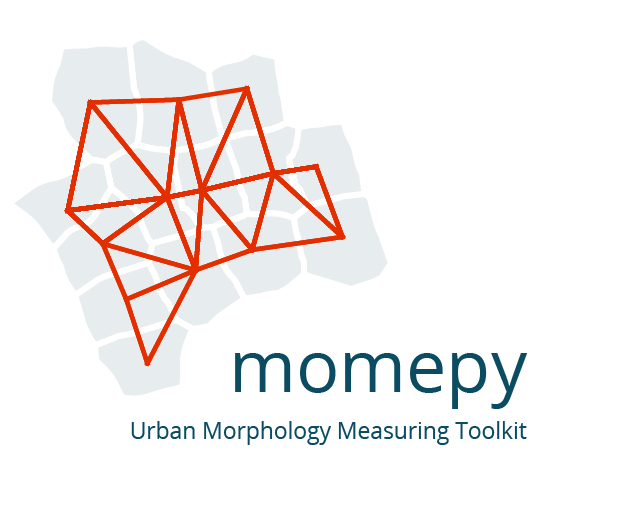

momepy documentation¶
{kind=link}

Introduction¶
Momepy is a library for quantitative analysis of urban form - urban morphometrics. It is part of PySAL (Python Spatial Analysis Library) and is built on top of GeoPandas, other PySAL modules and networkX.
momepy stands for Morphological Measuring in Python
Some of the functionality that momepy offers:
Measuring dimensions of morphological elements, their parts, and aggregated structures.
Quantifying shapes of geometries representing a wide range of morphological features.
Capturing spatial distribution of elements of one kind as well as relationships between different kinds.
Computing density and other types of intensity characters.
Calculating diversity of various aspects of urban form.
Capturing connectivity of urban street networks
Generating relational elements of urban form (e.g. morphological tessellation)
Momepy aims to provide a wide range of tools for a systematic and exhaustive analysis of urban form. It can work with a wide range of elements, while focused on building footprints and street networks.
Comments, suggestions, feedback, and contributions, as well as bug reports, are very welcome.
The package is currently maintained by @martinfleis and @jGaboardi.
Install¶
You can install momepy using Conda from conda-forge (recommended):
conda install -c conda-forge momepy
or from PyPI using pip:
pip install momepy
See the installation docs for detailed instructions. Momepy depends on python geospatial stack, which might cause some dependency issues.
Examples¶
coverage = momepy.AreaRatio(tessellation, buildings, left_areas=tessellation.area,
right_areas='area', unique_id='uID')
tessellation['CAR'] = coverage.series

Coverage Area Ratio¶
area_simpson = momepy.Simpson(tessellation, values='area',
spatial_weights=sw3,
unique_id='uID')
tessellation['area_simpson'] = area_simpson.series

Local Simpson’s diversity of area¶
G = momepy.straightness_centrality(G)

Straightness centrality¶
Citing¶
To cite momepy please use following software paper
published in the JOSS.
Fleischmann, M. (2019) ‘momepy: Urban Morphology Measuring Toolkit’, Journal of Open Source Software, 4(43), p. 1807. doi: 10.21105/joss.01807.
BibTeX:
@article{fleischmann_2019,
author={Fleischmann, Martin},
title={momepy: Urban Morphology Measuring Toolkit},
journal={Journal of Open Source Software},
year={2019},
volume={4},
number={43},
pages={1807},
DOI={10.21105/joss.01807}
}
Contributing to momepy¶
Contributions of any kind to momepy are more than welcome. That does not mean new code only, but also improvements of documentation and user guide, additional tests (ideally filling the gaps in existing suite) or bug report or idea what could be added or done better.
All contributions should go through our GitHub repository. Bug reports, ideas or even questions should be raised by opening an issue on the GitHub tracker. Suggestions for changes in code or documentation should be submitted as a pull request. However, if you are not sure what to do, feel free to open an issue. All discussion will then take place on GitHub to keep the development of momepy transparent.
If you decide to contribute to the codebase, ensure that you are using an
up-to-date main branch. The latest development version will always be there,
including the documentation (powered by sphinx).
Details are available in the contributing guide.
Get in touch¶
If you have a question regarding momepy, feel free to open an issue on GitHub. Eventually, you can contact us on dev@momepy.org.
Acknowledgements¶
Initial release of momepy was a result of a research of Urban Design Studies Unit (UDSU) supported by the Axel and Margaret Ax:son Johnson Foundation as a part of “The Urban Form Resilience Project” in partnership with University of Strathclyde in Glasgow, UK. Further development was supported by Geographic Data Science Lab of the University of Liverpool wihtin Urban Grammar AI research project.